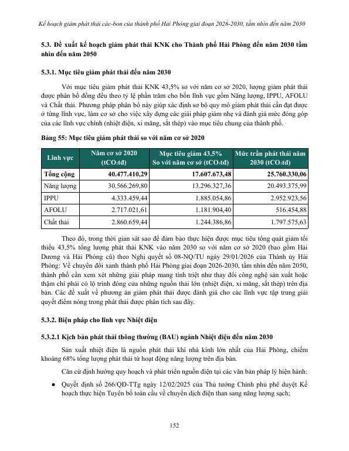
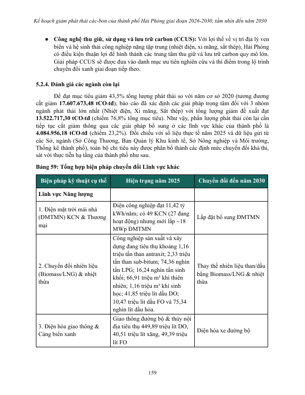
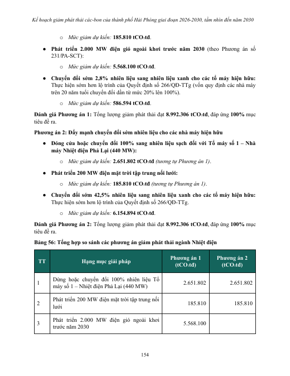
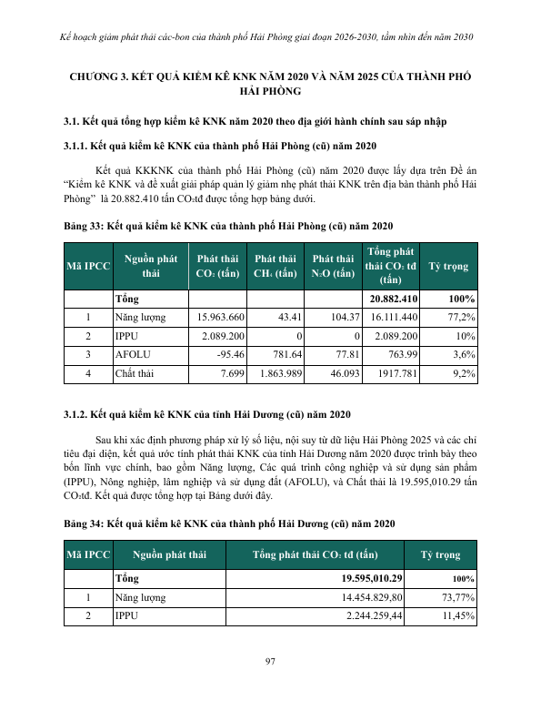
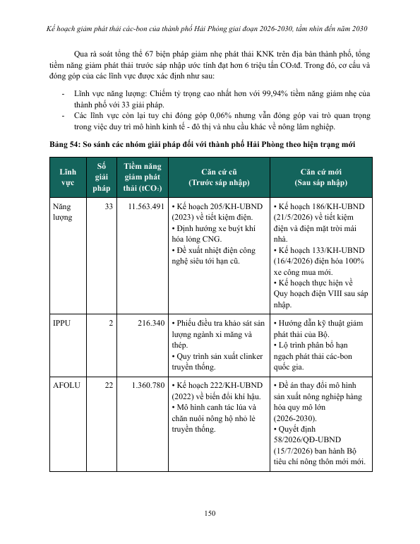

Hai Phong Decarbonization Plan 2026–2030 · draft review
Draft "VIE_DRAFT – Kế hoạch giảm phát thải HP 2026-2030", exported 22 Nov 2026 (172 pp). Rule agreed with DAE: 2030 cap = BAU 2030 − (2020 baseline × 43.5%). · Open draft · BAU workbook v6
OKDAE rule: Bảng 55 is right; show the formula
- Bảng 55 (p152): all five rows equal BAU 2030 (Bảng 44) − 2020 × 43.5%. Keep. Add a "BAU 2030" column and a formula note so a reader can check it.
- AFOLU cap 516,454.88 is 70% below BAU (19% of 2020), with no quantified AFOLU measure.
- Cement cap (p157): 5,906,881.00 − 2,422,454.90 = 3,484,426.10; draft prints 3,484,425.70 (0.40 t, from summing the measures).
- Bảng 56 PA2 (p154): 185,810 → 185,610 and 5,568,100 → 5,568,300; PA2 sums 8,992,506 today.
- Stop calling 2025 "năm cơ sở" (p123, 125, 164, 169). The 43.5% applies to 2020; 2025 is only the BAU starting point.
- Workbook
Tổng hợp!H8= E8 × 0.565 is labelled "lượng cần giảm" and its BAU (68.61 Mt) ≠ draft (43.37 Mt). Fix before sharing v6.

GapQuantified plan covers 13.52 of 17.61 Mt
- Bảng 59 (p159–160) lists 8 measures with zero tonnes. Quantify AWD, biogas, forest and WtE before claiming 100%.
- 7.89 Mt (58%) of the quantified plan is grid displacement (solar, offshore wind, WHR). The inventory is territorial, so say how those tonnes count.

RiskSolution estimates vs standards and real cases
| Item (page) | Report | Benchmark | Impact |
|---|---|---|---|
| 2,000 MW offshore wind (p154) | 48% CF | 35–38% CF¹ | −1.2 to −1.8 Mt |
| "42.5%" fuel switch (p154) | 6.15 Mt | = 29.7%, plug | 2.66 Mt unexplained |
| Clinker 83→65% + LC3 (p156) | both counted | same 18 pts | up to 1.3 Mt double |
| 737 MW wind for steel (p158) | 2.05 Mt | same output as above | double count |
| 200 MW solar (p154) | 1,409 kWh/kWp | 900–1,100² | −41 to −67 kt |
| Industrial EE, I.23 (Bảng 50) | 1.85 Mt | 0.75 Mt at 10% | −1.1 Mt |
| Forest protection F1+F2 (Bảng 52) | 822 kt | ≈52 kt | −0.72 Mt |
| Cement WHR 16 MW (p156) | 5,420 t/MW | Bút Sơn 12 MW³ | OK |
¹ Viet Nam Technology Catalogue 2026 · ² GIZ/VEPG solar guideline · ³ VNEEC, VICEM Bút Sơn · grid EF MAE/DCC · LC3 UNIDO 2024

QACalc and findings errors to clear before Monday
| Page | Issue | Fix |
|---|---|---|
| p97 Bảng 33 | AFOLU HP 2020 = 763.99 | 763,980 |
| p108 §3.2.5.1 | AFOLU 1,651,250.22 | 1,682,456.65 |
| p150 §5.2.5 | "hơn 6 triệu tấn", energy 99.94% | 13.51 Mt, 85.6% |
| p146 Bảng 50 | total 11,563,491 | rows sum 11,655,514 |
| p103 Bảng 38 | 3B share missing | −9.13% |
| p98 Bảng 35 | columns off by 10 t | 40,477,420.29 |
| p99 Bảng 36 | "30,490,161,34" | 30.490.161,34 |
| Workbook v6 | BAU 2030 = 68.61 Mt | draft: 43.37 Mt |
| TOC | all page numbers 1–2 low | regenerate |
| Text | "Giải định", "ban hàng", "KKNK", "thải thải", "NĐ-C" | typos |


Email thread "phương án giảm phát thải – tính theo 2020 mới" (20–22 Nov): The team aims to resend to DAE on Monday. The 22 Nov Gemini list is still open: p97 cell, Bảng 35 gap and the p108 figure remain.
AttachmentsGemini review lists (21 + 22 Nov) and summary report
Where Gemini is wrong (21 rows)
Gemini right: keep Bảng 55 as BAU − cut and state the formula; AFOLU 516,454.88 matches BAU − cut. Both fit the DAE rule.
| Gemini says | Actually | Sev. |
|---|---|---|
| Bảng 50 rows sum 11,563,491 | That is the printed total; rows sum 11,655,514 | High |
| Without duplicate row: 11,438,501 | 11,530,524 | High |
| Bảng 33 error carries 1 t to Bảng 35 | Gap is 11 t | Med |
| Rename Bảng 18.3 → 18.4 | Would duplicate 18.4 | Med |
| Wrong table numbers (Bảng 31/41/42/30/22) | Bảng 33/43/44/32/50–53 | Med |
| All 22 Nov page refs | 1–2 pages low | Med |
| 10 items re-reported | already fixed or never true (TOC Ch.2, dup Bảng 30/56, PHỤ LỤC 3…) | Low |
Summary report (Báo cáo tóm tắt, 21 Nov)
- OK: 2030 "mức trần" 25,760,330.06 matches the DAE rule (BAU − 2020 × 43.5%).
- Critical: "Năng lượng khác 4,30 triệu" double-counts 2.74 Mt already in the cement and steel targets. Residual blocks sum 6.72 Mt vs 4.08 Mt stated.
- High: population 4.66 million is not in the draft (4,149,871).
- Waste: draft says collection 100%, treatment ≥40%, not "xử lý 100%".
- LC3 is limestone calcined clay, not "đất sét trắng" (also p156–157).
New in draft (not in first pass)
- High: every page header says "tầm nhìn đến năm 2030". Should be 2050.
- Bảng 32 IPPU row copies the Services row. Rice 94,639 vs 159,353 ha.
- Forest 27,662 / 27,659 / 22,249.65 ha with no note explaining the difference.
- §3.2.2: cement IPPU explained as fuel burning. It is CaCO₃ calcination (fuel combustion is 1A2f).
- Bảng 50: EV row 19 = row 26 (124,990 t duplicated).
Method: 3 Codex lanes (deepseek-v4.1-flash) on the 22 Nov PDF/text export and BAU workbook v6. Each figure was recomputed with exact decimals. I re-checked p97, p150, p152 and p154 against the PDF myself. Ratings from standards and real cases are the lanes' findings. Only p152–p154 were cross-checked, so treat the rest as leads. Full files: research/2026-11-22-dae2030/dae2030-{dae435,projver,qa,att}.md. I re-checked the page header and the summary report figures myself.